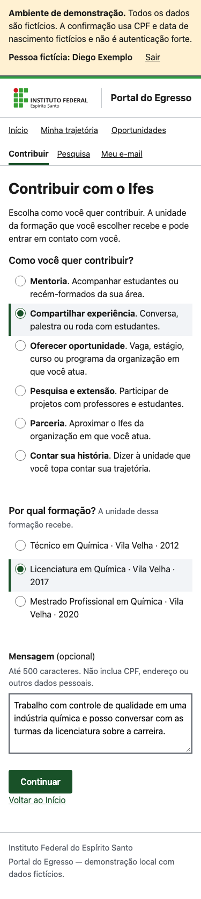
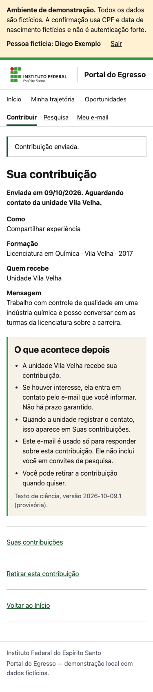
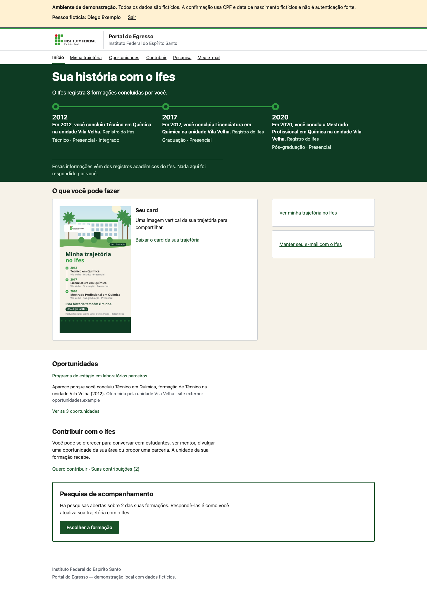
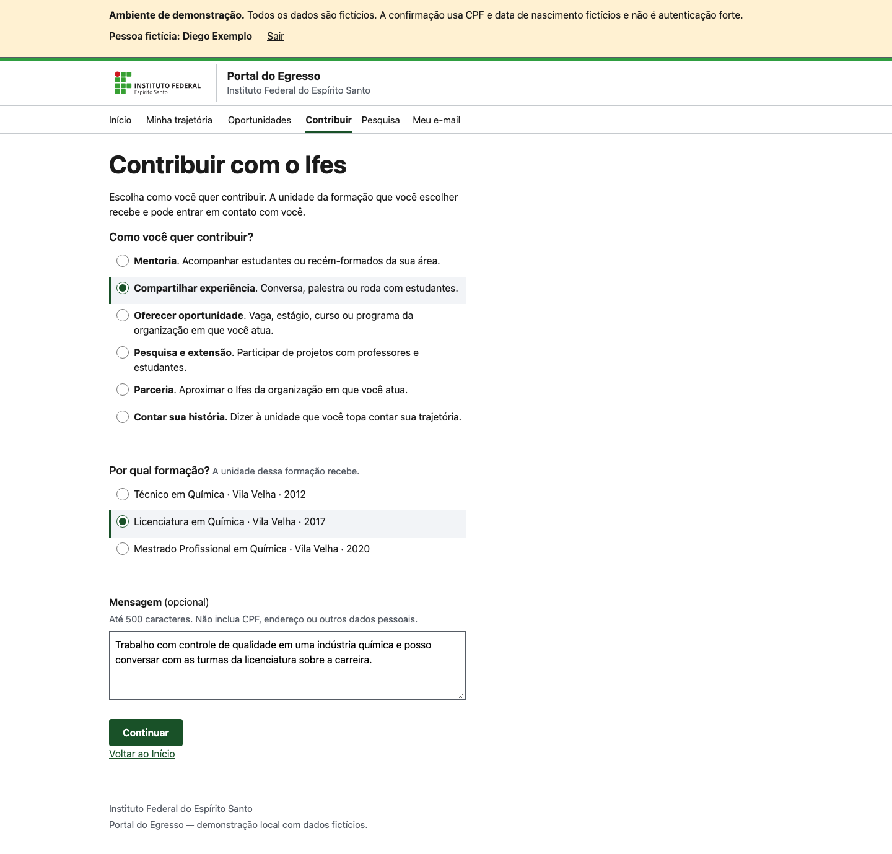
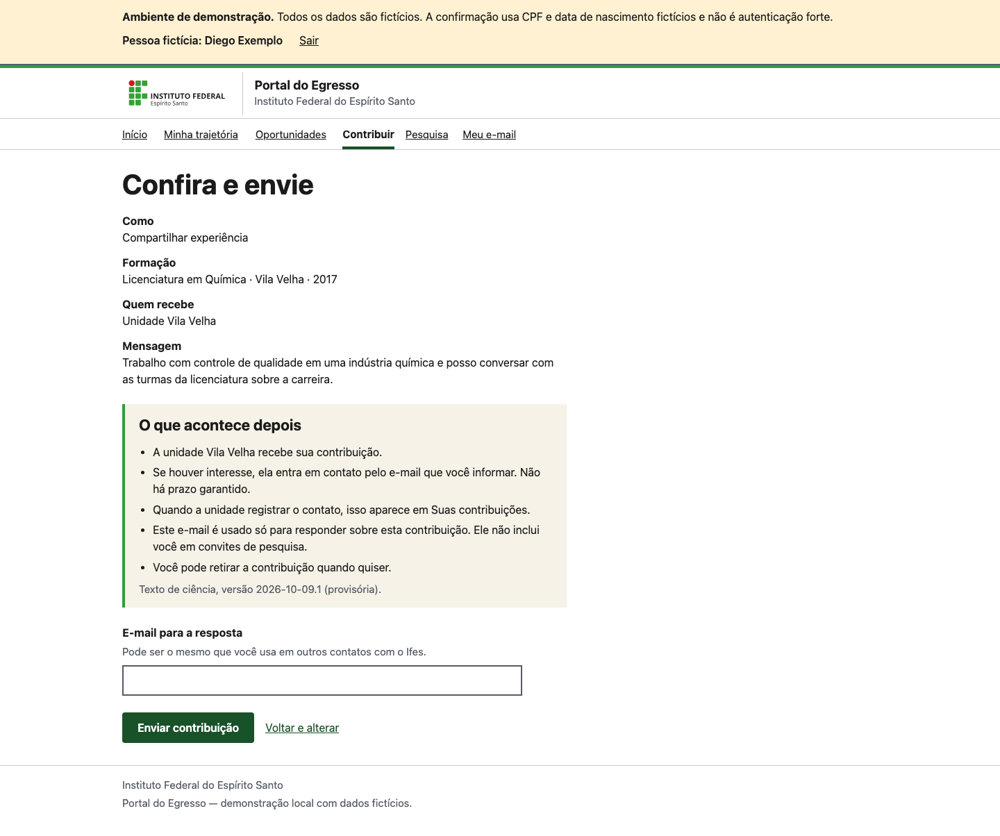
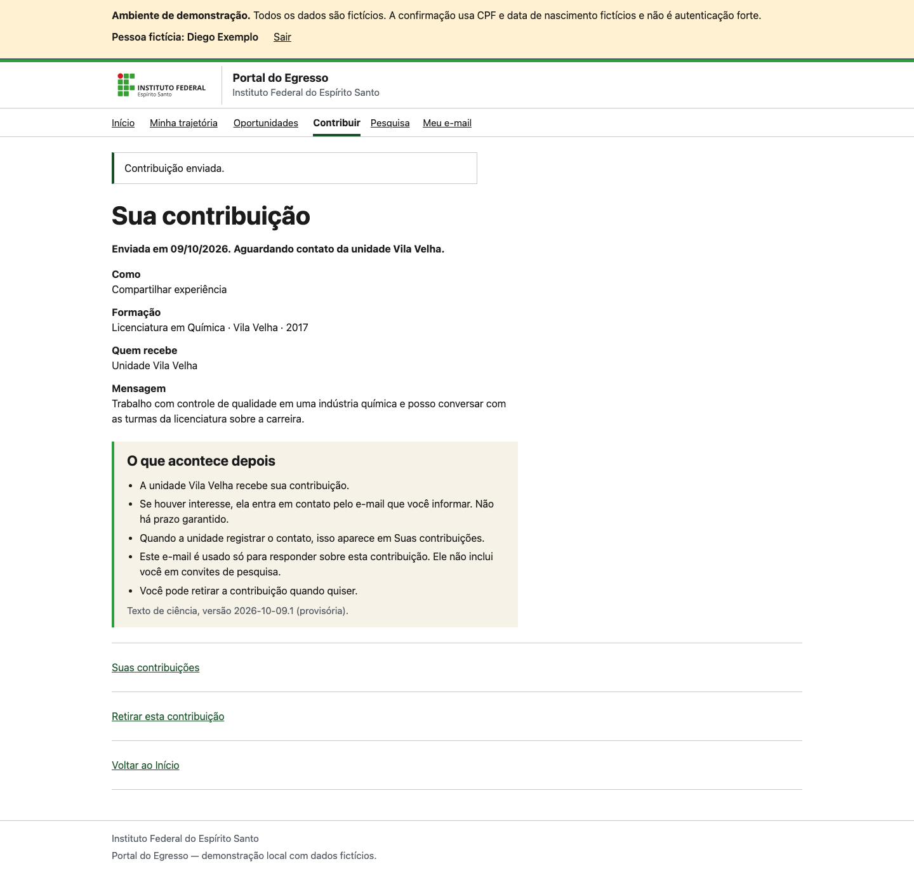
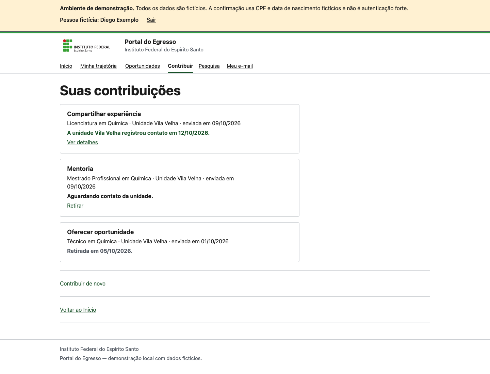
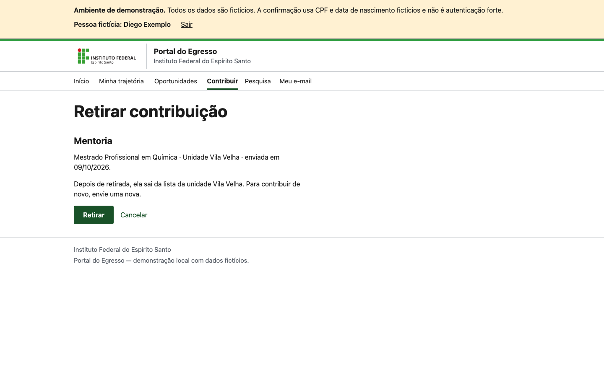
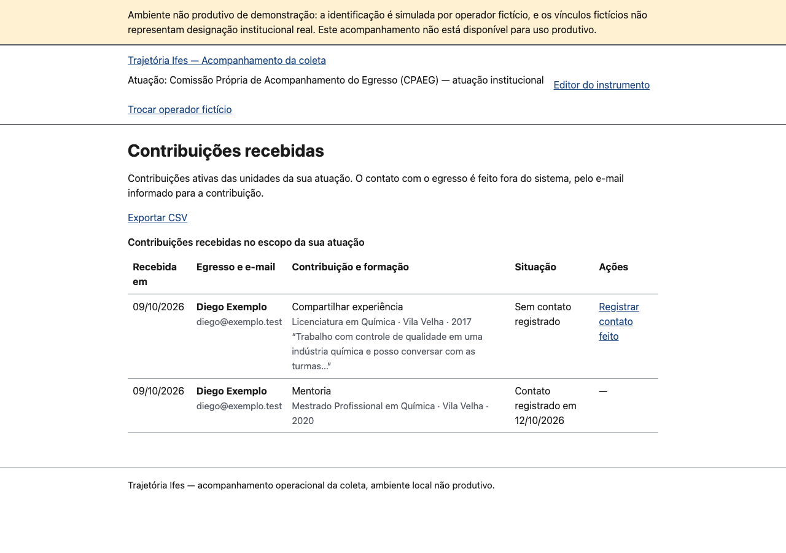
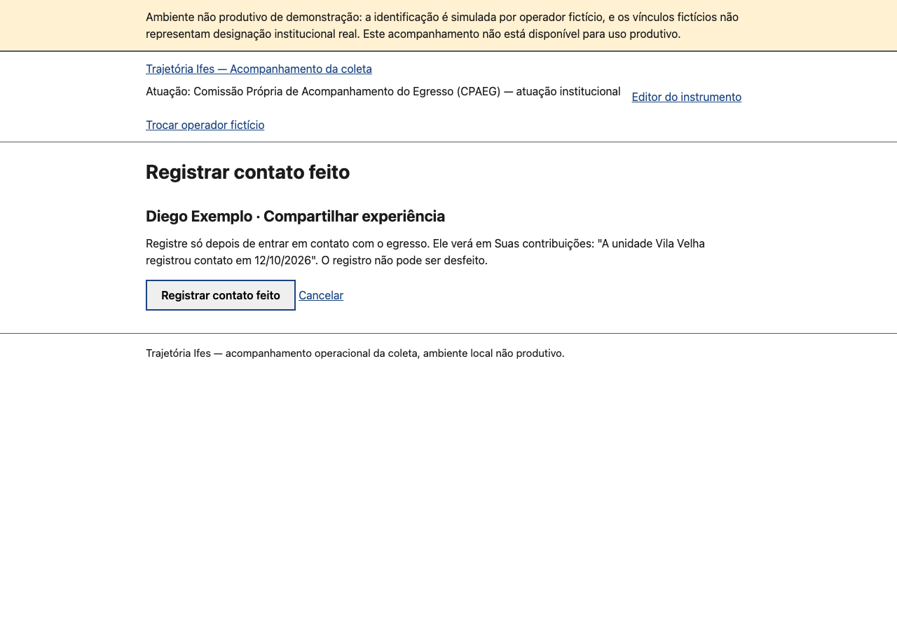

Feature 026 — Volte ao Ifes: protótipos do percurso
Telas estáticas sobre o HTML servido pela demonstração (Diego, três formações; operador fictício). Textos provisórios (DP-801). Não é implementação. Medidas: sem rolagem horizontal de 320 a 1440 px com fonte a 100% e 200% nas telas do egresso; um h1 por tela.
Percurso do egresso (celular, 375 px)








Percurso do egresso (desktop, 1440 px)












Unidade (1280 px)




CSV de exemplo (só ativas; sem CPF nem data de nascimento).